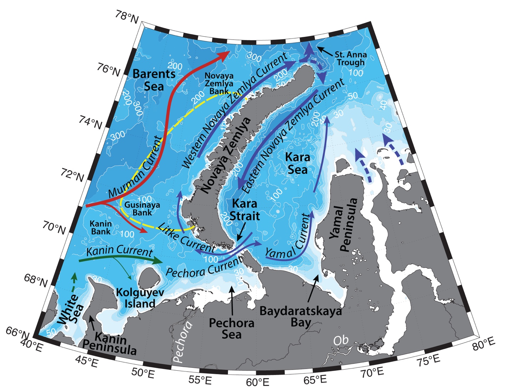

Schematic water circulation patterns and geographical place names in the Novaya Zemlya region. Dashed line marks the studied region.
Hydrography of the Western Novaya Zemlya region is mainly determined by the inflow and transformation of the Atlantic Water, formation and advection of Barents Sea Water, advection of Litke Current, seasonal sea ice cover, and freshwater runoff from the archipelago. All the currents on the Barents Shelf are prone to large seasonal and synoptic variability under the influence of atmospheric forcing.
Murman Current brings modified Atlantic Water (AW; with T>3°C, S>35 in the Norwegian Current; e.g. Loeng, 1991, Dalpadado et al., 2003) from the Norwegian coast to the Novaya Zemlya. AW is getting transformed on the Gusinaya, Novaya Zemlya, and Kanin banks, by getting fresher and colder and turns to the northeast, where exits the Barents Shelf via St. Anna Trough (e.g. Ozhigin et al., 2000, Shauer et al, 2002).
Western Novaya Zemlya Current is topographically steered above Novaya Zemlya Shelf northwards along the coast of the archipelago. It carries Novaya Zemlya Coastal Water (-1.8<T<6°C, 33<S<34.7), which is a mixture of modified AW from the Murman Current, locally formed Barents Sea Water, freshwater runoff from the archipelago and waters of Litke Current.
Litke current carries cold and fresh waters of the Kara Sea into the Barents Sea through the northern part of the Kara Strait (with mean transport of 0.1 Sv westwards; Loeng 1991; Maslowski et al., 2004). Upon entering Barents Sea, the current flows northwards, where it joins Western Novaya Zemlya Current (Ozhigin et al., 2000).
Some volume of Atlantic Water may also get onto the Barents Shelf via upwelling in the canyons and troughs – e.g. St. Anna Trough. This is modified AW, which has been advected through the Fram Strait and then along the Eurasian continental slope. It is colder and slightly saltier (0<T<1.5°C, 34.8<S<34.95), compared to the AW on the northeastern Barents Shelf (e.g. Boitsov et al., 2012).
Cold and dense Barents Sea Water (BSW; -1.9<T<5°C, 34.5<S<35.2), is formed on the Barents Shelf via winter cooling and salinization due to the brine rejection during ice formation, especially on the banks of the sea (e.g. on Novaya Zemlya Bank), as well as in leads and flaw polynyas. It is known to flow from the shelf into the Arctic Basin through St. Anna Trough, or occupy the deepest parts of the sea, where it is known as Bottom Barents Sea Water (Midttun L., 1985; Lien & Trofimov, 2013).
Cold and fresh Arctic Surface waters (T<0°C, 31<S<34.2), originated from the ice melt, enter the region from the north. During summertime depending on the atmospheric situation, Arctic Water can be warmed up to 5 °C. Summertime melting of the glaciers of the archipelago freshen the waters in the fjords and influence their hydrochemical structure (e.g. Lien & Trofimov, 2013).
Ice formation (including land fast ice around the archipelago) and its mobility in the Barents Sea are prone to large variability under the influence of atmospheric forcing and the Atlantic inflow. Ice usually starts to freeze up to the north of Novaya Zemlya in September, and reaches maximum thickness of 130–150 cm by the end of winter. In April ice starts to retreat from south to north. Polynyas in the Barents Sea usually form along the Novaya Zemlya coast (Winsor, Bjork, 2000). Icebergs can form from the glaciers of Novaya Zemlya and Franz Josef Land. In the recent years of warming Arctic, the reduction of ice cover in the Barents Sea would lead to more direct atmospheric cooling of the AW during wintertime, and less freshwater input from ice melt (Lien & Trofimov, 2013).
Local frontal zones form between the mentioned water masses. While frontal zones can limit the propagation of various waters, mesoscale eddies and other turbulent features can be spawned from the region as a result of the interaction of different currents, providing favorable conditions for biological diversity and productivity of the region (Zatsepin et al., 2010).